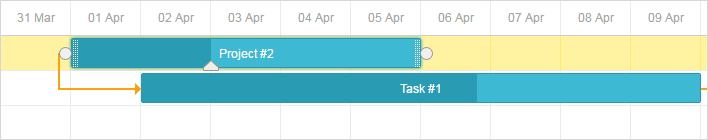

Available only in PRO Edition
This functionality is available only in the PRO edition
By default, dhtmlxGantt renders elements of the timeline area as layers and does it in the following order:
Displaying additional elements, such as a baseline or deadline marker, is usually done by creating a displayable layer and placing custom elements there (using the absolute positioning to put custom elements next to the related task).
To add one more layer to the timeline area, use the addTaskLayer method. As a parameter, the method takes a function that:
gantt.addTaskLayer(function myNewElement(task) {
var el = document.createElement('div');
// your code
return el;
});
Related sample: Displaying deadlines
Note:
To learn how to increase the perfomance speed of rendering custom elements, read the addTaskLayer article.
To understand how to apply this functionality, let's consider an example: you have a planned and an actual time for tasks and need to display both of times.
In the initial state tasks look like this:

First of all, you need to free some space for baselines under the tasks. For this purpose, it's necessary to reduce the task height to make it equal to approximately a half of the row height:
gantt.config.task_height = 16;
gantt.config.row_height = 40;
And move the task line to the top of the row by applying the following CSS code:
.gantt_task_line, .gantt_line_wrapper {
margin-top: -9px;
}
.gantt_side_content {
margin-bottom: 7px;
}
.gantt_task_link .gantt_link_arrow {
margin-top: -12px
}
.gantt_side_content.gantt_right {
bottom: 0;
}
The result will be the following:
After that, you need to add additional data properties to the task object. Let's name them: 'planned_start' and 'planned_end'.
dhtmlxGantt is aware just of the 'start_date' and 'end_date' data properties and automatically parse them to Date objects.
Any other date properties require additional processing.
To make the added 'planned_start', 'planned_end' properties recognizable by dhtmlxGantt,
parse them to Date objects with the help of the parseDate() method in the onTaskLoading event handler.
gantt.attachEvent("onTaskLoading", function(task){
task.planned_start = gantt.date.parseDate(task.planned_start, "xml_date");
task.planned_end = gantt.date.parseDate(task.planned_end, "xml_date");
return true;
});
Then, call the addTaskLayer method to display planned time for task (defined by the 'planned_start' and 'planned_end' properties).
gantt.addTaskLayer(function draw_planned(task) {
if (task.planned_start && task.planned_end) {
var sizes = gantt.getTaskPosition(task, task.planned_start, task.planned_end);
var el = document.createElement('div');
el.className = 'baseline';
el.style.left = sizes.left + 'px';
el.style.width = sizes.width + 'px';
el.style.top = sizes.top + gantt.config.task_height + 13 + 'px';
return el;
}
return false;
});
Next, add a style for your new elements:
.baseline {
position: absolute;
border-radius: 2px;
opacity: 0.6;
margin-top: -7px;
height: 12px;
background: #ffd180;
border: 1px solid rgb(255,153,0);
}
Finally, redefine the lightbox structure if you want to provide a possibility to edit the newly added properties from UI.
gantt.config.lightbox.sections = [
{name: "description", height: 70, map_to: "text", type: "textarea", focus: true},
{name: "time", height: 72, map_to: "auto", type: "duration"},
{name: "baseline", height: 72, map_to: {
start_date: "planned_start", end_date: "planned_end"}, type: "duration"}
];
gantt.locale.labels.section_baseline = "Planned";
The full code of the considered example you can see in the related sample.
Related sample: Display project baseline
dhtmlxGantt provides the possibility to add an extra layer over the Gantt Chart for placing some custom content into it. As an overlay you can use a div container, an HTML canvas, etc. To draw the overlay content, any third-party library can be used.
For example, you can add an S-curve into the extra overlay. Generally, S-curves display the growth of expenses, decrease of supplies of materials, etc., and allow tracking the common progress of implementing tasks of a project.
To add an overlay into gantt, you need to complete two steps:
gantt.plugins({
overlay: true
});
The following example demonstrates how you can add a canvas overlay with S-curves for displaying the target and actual progress of the project (implemented with the help of the ChartJS library):
var overlay = gantt.ext.overlay.addOverlay(function(container){
var canvas = document.createElement("canvas");
container.appendChild(canvas);
canvas.style.height = container.offsetHeight + "px";
canvas.style.width = container.offsetWidth + "px";
var ctx = canvas.getContext("2d");
var myChart = new Chart(ctx, {
type: "line",
// full chart configuration
});
});
The gantt.ext.overlay.addOverlay() method returns the id of a new overlay as a number.
Related sample: Gantt chart with overlay
The dhtmlxgantt_overlay.js extension contains a set of API methods to simplify work with overlays. These methods are available via the gantt.ext.overlay object.
adds a new overlay into the Gantt Chart and returns its id. Takes a container with custom content as a parameter.
var overlay = gantt.ext.overlay.addOverlay(function(container){});
removes an overlay by its id
gantt.ext.overlay.deleteOverlay(id);
returns an array with ids of overlays added into the chart
var ids = gantt.ext.overlay.getOverlaysIds();
repaints the specified overlay. Takes the id of an overlay as a parameter.
gantt.ext.overlay.refreshOverlay(id);
shows an overlay by its id. Takes the id of an overlay as a parameter.
gantt.ext.overlay.showOverlay(id);
hides an overlay by its id
gantt.ext.overlay.hideOverlay(id);
checks visibility of the specified overlay. Returns true if the overlay is visible.
var isVisible = gantt.ext.overlay.isOverlayVisible(id);